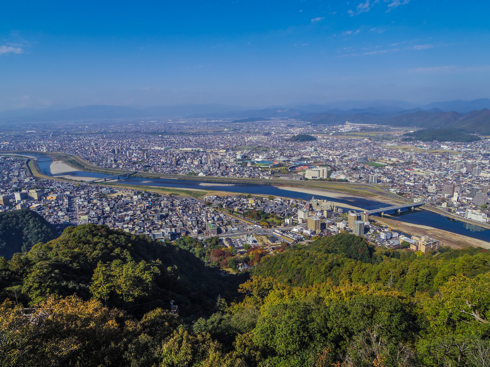
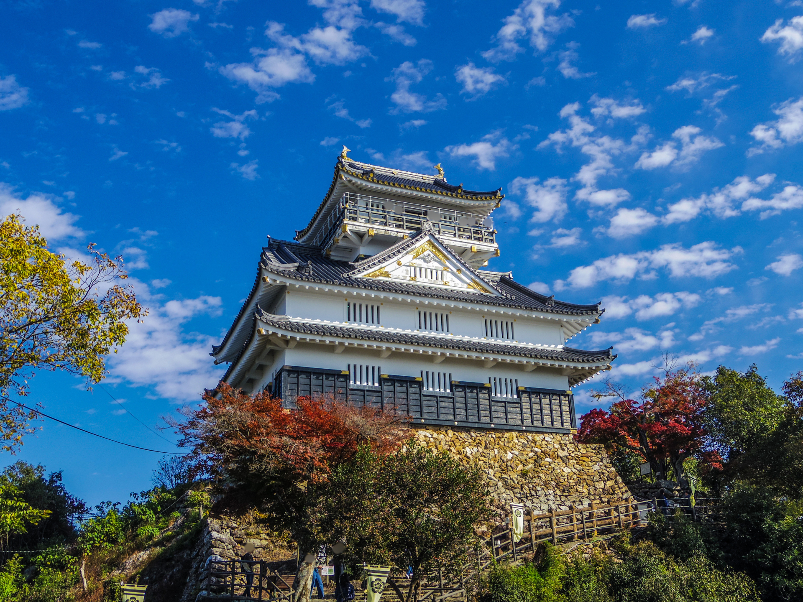
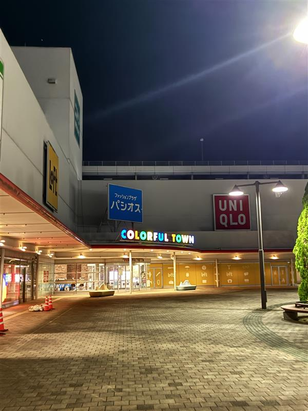

自然豊かな町の
おすすめポイントをご紹介
岐阜県は、土地が広く自然豊かであり、歴史の産物がたくさんあります。
また、アミューズメント施設などが各地にあります。
今回は、そのほんの一部をご紹介します。


光と影が調和する、極上のプライベート邸宅。自然環境とシームレスにつながる大開口と、素材感を活かしたミニマルな空間構成が特徴です。

カラフルタウン岐阜は、ショッピングやグルメ、映画などを楽しめる、家族や友人とのお出かけにぴったりの大型商業施設です。